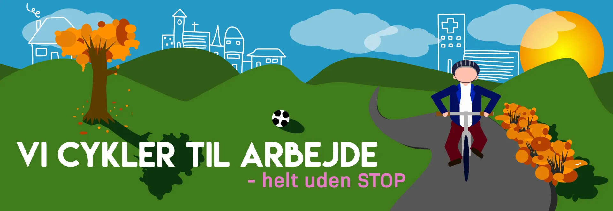
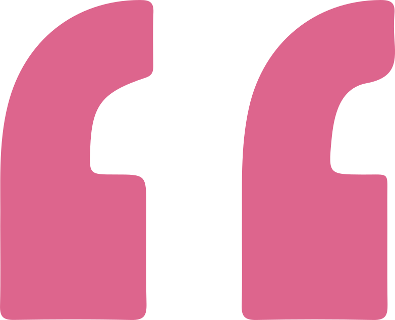
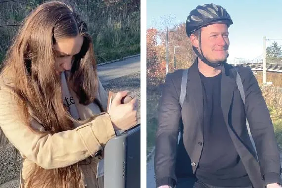
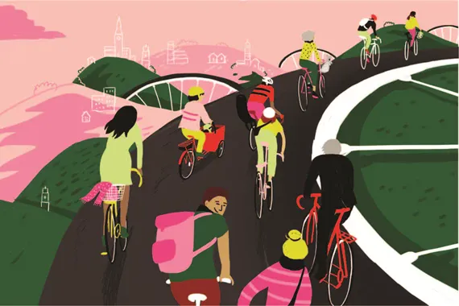
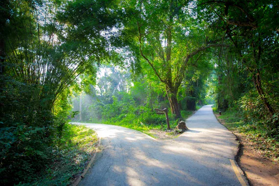
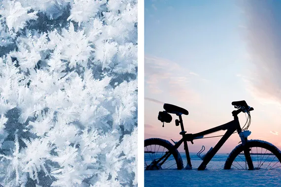
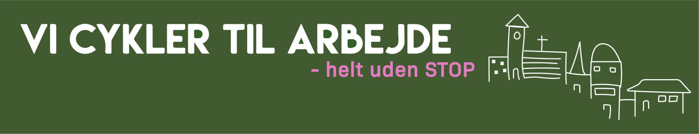
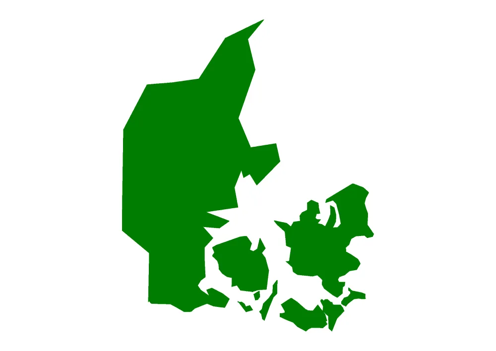

VI CYKLER TIL ARBEJDE – helt uden STOP


Tak til jer, fordi I har fået den pragtfulde idé med at tilskynde folk til at cykle til arbejde. Det var det, der fik mig til at starte med at cykle for snart 14 år siden. Tak, fordi I har givet mig en sund vane, som giver mig en indsprøjtning med lykke og velfærd, hver dag jeg cykler.

Helt uden STOP kampagne
Se vores nye video kampagne - Helt uden STOP. Vi kender det alle, teknikken driller, bussen er forsinket, der er sporarbejde, og du kommer for sent på arbejde. Gør ligesom tusindevis af andre - tag cyklen i stedet!
Se videoen
Hvad er VI CYKLER TIL ARBEJDE?
Cyklistforbundets klassiker har fået tusindvis af kollegaer op på cyklerne siden 1997. VI CYKLER TIL ARBEJDE spreder cykelglæde på arbejdspladser, hjemmekontorer og cykelstier i hele Danmark og kører igen i 2022.
Læs mere her
Inspiration til din cykling
Vi klæder dig på til VI CYKLER TIL ARBEJDE med det bedste inden for gode råd, guides og inspiration.
Læs mere her
Vi vintercykler i uge 6
I uge 6 er det tid til at finde sin indre viking frem, når vi sadler op til VI CYKLER TIL ARBEJDE - vintercyklingsuge for anden år i træk. Det er gratis at cykle med!
Læs mere her
Det siger de om VI CYKLER TIL ARBEJDE

At cykle sparer mig for en masse ventetid med offentlige transportmidler. Det er så dejligt at have friheden til at kunne cykle på arbejde!
Når jeg cykler i stedet for at tage bilen på arbejde, møder jeg mange flere mennesker - og det sender et sundt signal til andre.